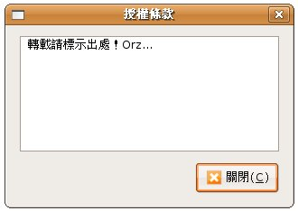

GtkAboutDialog是GtkDialog的子類別，提供您在製作應用程式「關於 XXX」時的內建對話方塊，直接以程式實例來看看它的一些功能：
#include <gtk/gtk.h>
void button_clicked(GtkWidget *button, gpointer data) {
GtkWidget *dialog;
GdkPixbuf *logo;
GError *error = NULL;
dialog = gtk_about_dialog_new();
// 載入 LOGO 圖檔
logo = gdk_pixbuf_new_from_file("caterpillar.gif", &error);
if(error == NULL) {
gtk_about_dialog_set_logo(GTK_ABOUT_DIALOG(dialog), logo);
}
else {
g_print("Error: %s\n", error->message);
g_error_free (error);
}
gtk_about_dialog_set_name(GTK_ABOUT_DIALOG (dialog), "良葛格學習筆記");
gtk_about_dialog_set_version(GTK_ABOUT_DIALOG(dialog), "2.0");
gtk_about_dialog_set_comments(
GTK_ABOUT_DIALOG(dialog), "C/C++、Java、Open Source");
gtk_about_dialog_set_copyright(
GTK_ABOUT_DIALOG(dialog),"(C) 2008 caterpillar");
gtk_about_dialog_set_license(
GTK_ABOUT_DIALOG(dialog), "轉載請標示出處！Orz...");
gtk_about_dialog_set_website(
GTK_ABOUT_DIALOG(dialog), "http://caterpillar.onlyfun.net");
gtk_dialog_run(GTK_DIALOG(dialog));
gtk_widget_destroy(dialog);
}
int main(int argc, char *argv[]) {
GtkWidget *window;
GtkWidget *button;
gtk_init(&argc, &argv);
window = gtk_window_new(GTK_WINDOW_TOPLEVEL);
gtk_window_set_title(GTK_WINDOW(window), "GtkAboutDialog");
button = gtk_button_new_with_label("按我");
gtk_container_add(GTK_CONTAINER(window), button);
g_signal_connect(GTK_OBJECT(window), "destroy",
G_CALLBACK(gtk_main_quit), NULL);
g_signal_connect(GTK_OBJECT(button), "clicked",
G_CALLBACK(button_clicked), window);
gtk_widget_show(window);
gtk_widget_show(button);
gtk_main();
return 0;
}
要設定對話方塊的圖檔，可以使用gtk_about_dialog_set_logo()函式，這會需要GdkPixbuf型
態的引數，您可以使用gdk_pixbuf_new_from_file()來載入圖檔，若載入時發生錯誤，會將錯誤相關資訊設定給GError引數，剩
下的函式之作用，直接來看執行的畫面即可了解：
「授權條款」按鈕的功能是gtk_about_dialog_set_license()函式所設定的，按下該鈕後會出現以下的畫面：

|
|